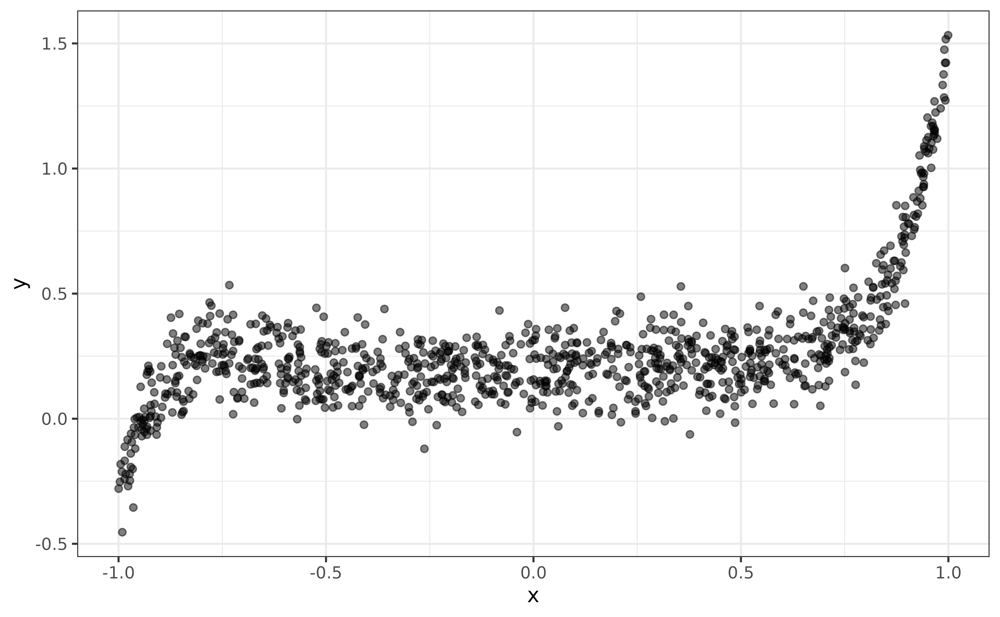
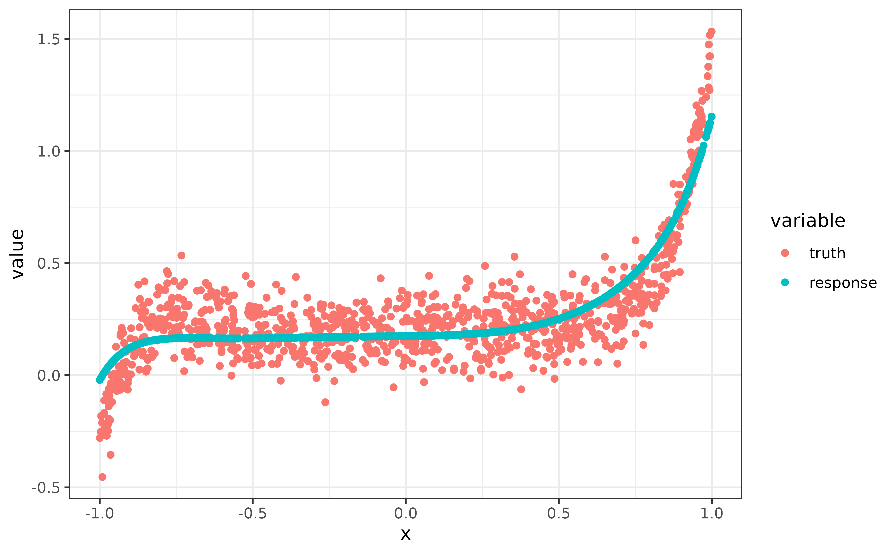

This vignette introduces the lazy_tensor class, which is
a vector type that can be used to lazily represent torch tensors of
arbitary dimensions. Among other things, it allows
mlr3torch to work with images, which we will illustrate
using the predefined MNIST task, which has one feature
image of class "lazy_tensor". The images
display the digits 0, …, 9, and the goal is to classify them
correctly.
library(mlr3torch)
mnist = tsk("mnist")
mnist
#> <TaskClassif:mnist> (70000 x 2): MNIST Digit Classification
#> * Target: label
#> * Properties: multiclass
#> * Features (1):
#> - lt (1): imageThe name "lazy_tensor" stems from the fact, that the
tensors are not necessarily stored in memory, as this is often
impossible when working with large image datasets.
Therefore, we can easily access the data without any expensive
data-loading. We see that the data contains one column label,
which is the target variable, and an image which is the
input feature.
mnist$head()
#> Processing...
#> Done!
#> label image
#> <fctr> <lazy_tensor>
#> 1: 5 <tnsr[1x28x28]>
#> 2: 0 <tnsr[1x28x28]>
#> 3: 4 <tnsr[1x28x28]>
#> 4: 1 <tnsr[1x28x28]>
#> 5: 9 <tnsr[1x28x28]>
#> 6: 2 <tnsr[1x28x28]>If we wanted to obtain the actual tensors representing the images, we
can do so by calling materialize(), which will return a
list of torch_tensors, not necessarily all with the same
shape. Here, we only show a slice of the tensor for readability.
lt = mnist$data(cols = "image")[[1L]]
materialize(lt[1])[[1]][1, 12:16, 12:16]
#> torch_tensor
#> 139 253 190 2 0
#> 11 190 253 70 0
#> 0 35 241 225 160
#> 0 0 81 240 253
#> 0 0 0 45 186
#> [ CPUFloatType{5,5} ]If all elements have the same shape as is the case here, we could
also obtain a single torch_tensor by specifying
rbind = TRUE.
In order to train a Learner on a Task
containing lazy_tensor columns it must support the
lazy_tensor feature type, as is the case for the multi
layer perceptron, which works both with numeric types, as
well as the lazy_tensor.
mlp = lrn("classif.mlp",
neurons = c(100, 100),
epochs = 10, batch_size = 32
)
mlp
#> <LearnerTorchMLP:classif.mlp>: Multi Layer Perceptron
#> * Model: -
#> * Parameters: epochs=10, device=auto, num_threads=1,
#> num_interop_threads=1, seed=random, jit_trace=FALSE, eval_freq=1,
#> measures_train=<list>, measures_valid=<list>, patience=0,
#> min_delta=0, batch_size=32, shuffle=TRUE, tensor_dataset=FALSE,
#> neurons=100,100, p=0.5, activation=<nn_relu>, activation_args=<list>
#> * Validate: NULL
#> * Packages: mlr3, mlr3torch, torch
#> * Predict Types: [response], prob
#> * Feature Types: integer, numeric, lazy_tensor
#> * Properties: internal_tuning, marshal, multiclass, twoclass,
#> validation
#> * Optimizer: adam
#> * Loss: cross_entropy
#> * Callbacks: -However, because lazy_tensors also have a specific
shape, we also must ensure that the shape of the
lazy_tensor matches the expected input shape of the
learner. The multi layer perceptron expects a 2d-tensor where the first
dimension is the batch dimension. But above we have seen that this is
not the case for MNIST, where each element has shape
(1, 28, 28). Therefore, we need to flatten the
lazy_tensor, which we here do using
po("trafo_reshape"):
reshaper = po("trafo_reshape", shape = c(-1, 28 * 28))
mnist_flat = reshaper$train(list(mnist))[[1L]]
mnist_flat$head()
#> label image
#> <fctr> <lazy_tensor>
#> 1: 5 <tnsr[784]>
#> 2: 0 <tnsr[784]>
#> 3: 4 <tnsr[784]>
#> 4: 1 <tnsr[784]>
#> 5: 9 <tnsr[784]>
#> 6: 2 <tnsr[784]>Note that this does not actually reshape all the tensors
in-memory, this will again only happen once materialize()
is called.
We can now proceed to train the a simple multi-layer perceptron on the flattened mnist task:
mlp = lrn("classif.mlp",
neurons = c(100, 100),
epochs = 10, batch_size = 32
)
mlp$train(mnist_flat)Creating a Lazy Tensor
Every lazy_tensor is built on top of a
torch::dataset, so we here assume that you are familiar
with it. For more information on how to create
torch::datasets, we recommend reading the torch package documentation. The
only additional restriction that we impose on the dataset is that it
must have a .getitem or .getbatch method that
returns a list of named tensors.
As an example, we will create a lazy_tensor of length
1000, whose elements are drawn from a uniform distribution over \([0, 1]\). While the data is stored
in-memory in this example, this is not necessary and the
$.getitem() method can e.g. load images from disk.
mydata = dataset(
initialize = function() {
self$x = runif(1000, -1, 1)
},
.getbatch = function(i) list(x = torch_tensor(self$x[i])$unsqueeze(2)),
.length = function() 1000
)()In order to create a lazy_tensor from
mydata, we have to annotate the returned shapes of the
dataset by passing a named list to dataset_shapes. The
first dimension must be NA, as it is the batch dimension.
We can also set a shape to NULL to indicate that it is
unknown, i.e. it varies between elements.
lt = as_lazy_tensor(mydata, dataset_shapes = list(x = c(NA, 1)))
lt[1:5]
#> <ltnsr[5]>
#> [1] <tnsr[1]> <tnsr[1]> <tnsr[1]> <tnsr[1]> <tnsr[1]>Note that in this case, because we implemented the
.getbatch method, we could have even omitted specifying the
dataset_shapes as they could have been auto-inferred.
We can convert this vector to a torch_tensor just like
before:
materialize(lt[1:5], rbind = TRUE)
#> torch_tensor
#> -0.9852
#> -0.0672
#> -0.0044
#> -0.4205
#> 0.4658
#> [ CPUFloatType{5,1} ]Because we added no preprocessing, this is the same as calling the
$.getbatch() method on mydata and selecting
the element x.
torch_equal(
materialize(lt[1], rbind = TRUE),
mydata$.getbatch(1)$x
)
#> [1] TRUEWe continue with creating an example task from lt, where
the relationship between the x and y variable
is polynomial. Note that the target variable, both for classification
and regression, cannot be a lazy_tensor, but must be a
factor or numeric respectively.
library(data.table)
x = mydata$x
y = 0.2 + 0.1 * x - 0.1 * x^2 - 0.3 * x^3 + 0.5 * x^4 + 0.5 * x^7 + 0.6 * x^11 + rnorm(length(mydata)) * 0.1
dt = data.table(y = y, x = lt)
task_poly = as_task_regr(dt, target = "y", id = "poly")
task_poly
#> <TaskRegr:poly> (1000 x 2)
#> * Target: y
#> * Properties: -
#> * Features (1):
#> - lt (1): xBelow, we plot the data:
library(ggplot2)
ggplot(data = data.frame(x = x, y = y)) +
geom_point(aes(x = x, y = y), alpha = 0.5)
In the next section, we will create a custom PipeOp to
fit a polynomial regression model.
Custom Preprocessing
In order to create a custom preprocessing operator for a lazy tensor,
we have to create a new PipeOp class. To make this as
convenient as possible, mlr3torch offters a
pipeop_preproc_torch() function that we recommend using for
this purpose. Its most important arguments are:
-
id- Used as the default identifier of thePipeOp -
fn- The preprocessing function. By default, the first argument is assumed to be thetorch_tensorand the remaining arguments will be part of thePipeOp’s parameter set. -
shapes_out- A function that returns the shapes of the output tensors given the input shapes. This can also be set toNULLfor an unknown shape or to"infer"for auto-inference, see?pipeop_preproc_torchfor more information.
Below, we create a PipeOp, that transforms a vector
x into a matrix \((x^{d_1} ...,
x^{d_n})\), where \(d\) is the
degrees parameter of the PipeOp.
PipeOpPreprocTorchPoly = pipeop_preproc_torch("poly",
fn = function(x, degrees) {
torch_cat(lapply(degrees, function(d) torch_pow(x, d)), dim = 2L)
},
shapes_out = "infer"
)We can now create a new instance of this PipeOp by
calling $new(), and we set the parameter
degrees to those degrees that were used when simulating the
data above. Further, we set the parameter stages, that is
always available, to "both", which means that the
preprocessing is applied during training and prediction. For data
augmentation this can be set to "train".
po_poly = PipeOpPreprocTorchPoly$new()
po_poly$param_set$set_values(
degrees = c(0, 1, 2, 3, 4, 7, 11),
stages = "both"
)To create our polynomial regression learner, we combine the
polynomial preprocessor with a lrn("regr.mlp") with no
hidden layer (i.e. a linear model) and train the learner on the
task.
lrn_poly = as_learner(
po_poly %>>% lrn("regr.mlp", batch_size = 256, epochs = 100,
neurons = integer(0))
)
lrn_poly$train(task_poly)
pred = lrn_poly$predict(task_poly)Below, we visualize the predictions and see that the model captured the non-linear relationship reasonably:
dt = melt(data.table(
truth = pred$truth,
response = pred$response,
x = x),
id.vars = "x", measure.vars = c("truth", "response")
)
dt$variable = factor(dt$variable, levels = c("truth", "response"))
ggplot(data = dt) +
geom_point(aes(x = x, y = value, color = variable))
In the next section, we will briefly cover the implementation details
of the lazy_tensor, which is not necessary to work with the
data-type, so feel free to skip this part.
Digging Into Internals
Internally, the lazy_tensor vector uses the
DataDescriptor class to represent the (possibly)
preprocessed data. It is very similar to the
ModelDescriptor class that is used to build up neural
nerworks using PipeOpTorch objects. The
DataDescriptor stores a torch::dataset, an
mlr3pipelines::Graph and some metadata.
desc = DataDescriptor$new(
dataset = mydata,
dataset_shapes = list(x = c(NA, 1))
)Per default, the preprocessing graph contains only a single
PipOpNop that does nothing.
desc
#> <DataDescriptor: 1 ops>
#> * dataset_shapes: [x: (NA,1)]
#> * input_map: (x) -> Graph
#> * pointer: nop.77752c.x.output
#> * shape: [(NA,1)]The printed output of the data descriptor informs us about:
- The number of
PipeOps contained in the preprocessing graph - The output shapes of the dataset
- The input map, i.e. how the data is passed to the preprocessing graph, which is important when there are multiple inputs
- The
pointer, which points to a specific channel of an outputPipeOp. The output of this channel is the tensor represented by theDataDescriptor. Note that theidfrom the inputpo("nop")is randomly generated, which is needed to prevent id clashes then there are more than one input to the preprocessing graph. - The
shape, which is the shape of the tensor at positionpointer
A lazy tensor can be constructed from an integer vector and a
DataDescriptor. The integer vector specifies which element
of the DataDescriptor the lazy_tensor
contains. Below, the first two elements of the lazy_tensor
vector represent the same element of the DataDescriptor,
while the third element represents a different element. Note that all
indices refer to the same DataDescriptor.
lt = lazy_tensor(desc, ids = c(1, 1, 2))
materialize(lt, rbind = TRUE)
#> torch_tensor
#> -0.9852
#> -0.9852
#> -0.0672
#> [ CPUFloatType{3,1} ]Internally, the lazy tensor is represented as a list of lists, each
element containing an id and a DataDescriptor Currently,
there can only be a single DataDescriptor in a
lazy_tensor vector.
unclass(lt[[1]])
#> [[1]]
#> [1] 1
#>
#> [[2]]
#> <DataDescriptor: 1 ops>
#> * dataset_shapes: [x: (NA,1)]
#> * input_map: (x) -> Graph
#> * pointer: nop.77752c.x.output
#> * shape: [(NA,1)]What happens during materialize(lt[1]) is the
following:
# get index and data descriptor
desc = lt[[1]][[2]]
id = lt[[1]][[1]]
# retrieve the batch <id> from the datast
dataset_output = desc$dataset$.getbatch(id)
# batch is reorganized according to the input map
graph_input = dataset_output[desc$input_map]
names(graph_input) = names(desc$graph$input$name)
# the reorganized batch is fed into the preprocessing graph
graph_output = desc$graph$train(graph_input, single_input = FALSE)
# the output pointed to by the pointer is returned
tensor = graph_output[[paste0(desc$pointer, collapse = ".")]]
tensor
#> torch_tensor
#> -0.9852
#> [ CPUFloatType{1,1} ]Preprocessing a lazy_tensor vector adds new
PipeOps to the preprocessing graph and updates the
metainformation like the pointer and output shape. To show this, we
create a simple example task, using the lt vector as a
feature.
taskin = as_task_regr(data.table(x = lt, y = 1:3), target = "y")
taskout = po_poly$train(list(taskin))[[1L]]
lt_out = taskout$data(cols = "x")$x
descout = lt_out[[1]][[2]]
descout
#> <DataDescriptor: 2 ops>
#> * dataset_shapes: [x: (NA,1)]
#> * input_map: (x) -> Graph
#> * pointer: poly.x.output
#> * shape: [(NA,7)]
descout$graph
#> Graph with 2 PipeOps:
#> ID State sccssors prdcssors
#> <char> <char> <char> <char>
#> nop.77752c.x <list> poly.x
#> poly.x <<UNTRAINED>> nop.77752c.xWe see that the $graph has a new pipeop with id
"poly.x" and the output pointer points to
poly.x. Also we see that the shape of the tensor is now
c(NA, 7) and not c(NA, 1) as before, which we
can verify by calling materialize() again:
materialize(lt_out[1:2], rbind = TRUE)
#> torch_tensor
#> 1.0000 -0.9852 0.9706 -0.9563 0.9421 -0.9009 -0.8487
#> 1.0000 -0.9852 0.9706 -0.9563 0.9421 -0.9009 -0.8487
#> [ CPUFloatType{2,7} ]